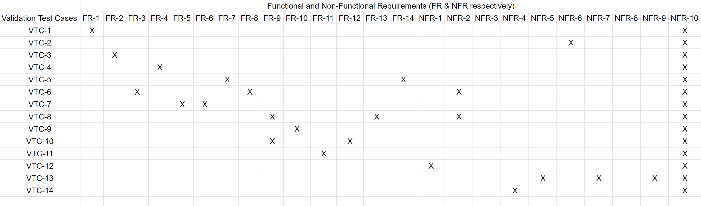

Validation Tests
Validation test is the critical stage in testing plan as it needs to be fully test ed according to the business requirements and based on the user needs. Functional and non-functional requirements must be fully covered in the validation test which will cover the critical functionalities of the system. In case, if any deviation has been encountered, it needs to be monitored and resolved as priority 1 bug. There are several third party vendor tools available to test this such as Selenium, HP quality center etc. UAT testing that is performed by a client is also part of the validation testing phase as well. After all these test cases passed, the application goes to production.
Validation Test Table
| Test Case # | Test Case | Test Description | Requirement # |
|---|---|---|---|
| VTC-1 | Turn on/off the system | The system turns on and turns off successfully | FR-1 |
| VTC-2 | Memory access when system is off | Turn the system off and check if the system is trying to receive/store delivery instructions. Test is successful if the system does not allow memory access when turned off. | NFR-6 |
| VTC-3 | Receive delivery information from control system | Control system will send signals to the drone along with the delivery information, way point info, landing and way back to docking station info. | FR-2 |
| VTC-4 | Take a flight | Send a start command to the motors and check if they start rotating and the drone commences flight | FR-4 |
| VTC-5 | Motion check | Verify if system can alter motor speeds, turn off motor, and activate directional equipment to direct the drone | FR-7, FR-14 |
| VTC-6 | Retrieving waypoint information | Make sure data structures in onboard memory can store waypoint and location information | FR-3, FR-8, NFR-2 |
| VTC-7 | Determine the destination reached | System will keep comparing the current waypoint information to the destination waypoint info. If it matched, it will consider the destination reached. | FR-5, FR-6 |
| VTC-8 | Trigger landing | Pre set landing info will be retrieved from the memory and send message to transmitted to execute landing gear and land drone | FR-9, FR-13, NFR-2 |
| VTC-9 | Release package | Control module first checks whether the drone has successfully landed. Then the control system sends a signal and the package will be released from the drone and the signal will be sent back to the system. | FR-10 |
| VTC-10 | Take action when battery level is down | Control module continuously monitors battery level, if it is below a certain threshold, pre-set landing instruction executed and the drone safely lands on earth. | FR-9, FR-12 |
| VTC-11 | Safely back to the docking station | Once package release, drone use same waypoints to return to docking station | FR-11 |
| VTC-12 | Security Check | Make sure the system can communicate with a cloud server on a secure connection. Try to gain access to system communication, if it is easy to access then communication protocol needs to be changed to make it more secure | NFR-1 |
| VTC-13 | Upgradability | Verify modular design and scalability of components by making sure modules only communicate when needed and can be developed independently | NFR-5, NFR-7, NFR-9 |
| VTC-14 | Documentation | Verify sufficient documentation for code, check if readme files are included for each module | NFR-4 |
Traceability Matrix
